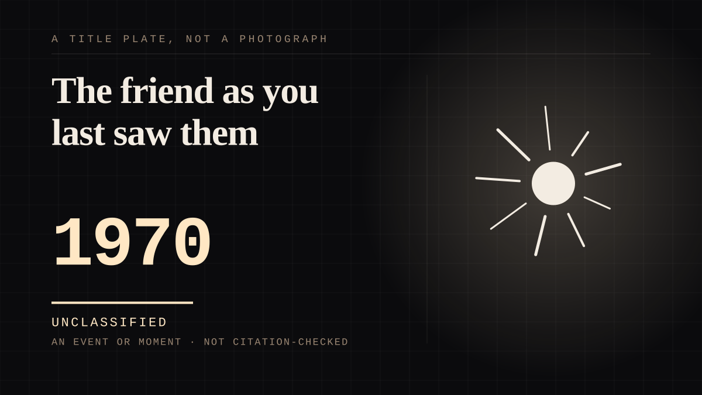

An event or moment · 1970 ·
The friend as you last saw them
A version of somebody assembled out of memory, never checked against the original, and treated as the true article.

The mirror shelf holds a figure built from recollection and explicitly not verified against the source. What makes it a mirror rather than a deity is that the person really exists, is reachable, and could be asked - and usually is not, because the remembered version is better than the one that would answer. The gap between the copy and the original is the whole attachment and nothing on the far end is doing anything to close it.
Where it sits
1950 1950-1999 · 1970 1999
Provenance · 1 source record(s)
- needs-sourceReflective self-construction and the internal reference standard used to evaluate one's own behaviour.Schoen, E. G. (1995). The Reflective Self: A Cognitive Perspective. In K. J. Gergen et al. (Eds.), The Handbook of Social Psychology (2nd ed., pp. 143-180). Lawrence Erlbaum.
Connected · 1 out, 0 in
It sits in
The full timeline → · The database → · See it in the atlas →